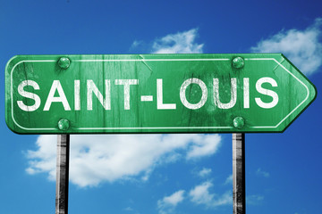
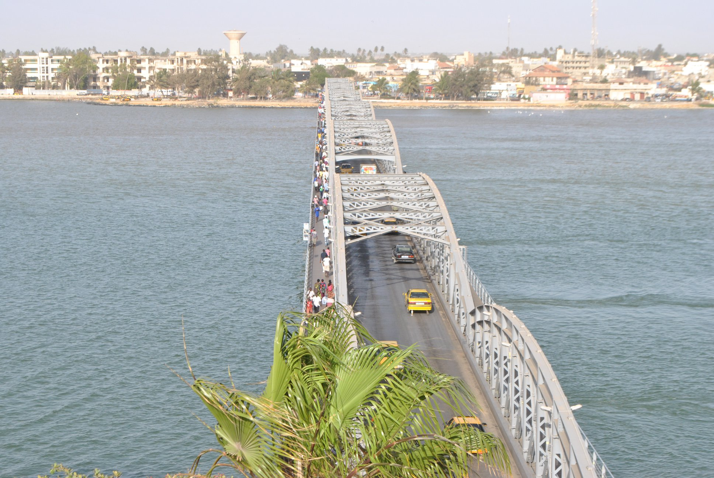

Saint-Louis, souvent appelée « Ndar » par les locaux, est une ville historique et culturelle située au nord-ouest du Sénégal. Ancienne capitale du pays, elle est située sur l'île de Ndar, au cœur du fleuve Sénégal, et reliée à la terre ferme par le célèbre pont Faidherbe, une prouesse architecturale datant de la fin du XIXe siècle.
Inscrite au patrimoine mondial de l'UNESCO depuis l'an 2000, Saint-Louis est connue pour son héritage colonial, ses bâtiments historiques colorés, et ses ruelles étroites. Elle joue un rôle central dans l'histoire du Sénégal, ayant été un important centre économique, administratif et culturel sous l'époque coloniale française.
CULTURE
Saint-Louis est un berceau culturel du Sénégal. La ville est célèbre pour son Festival de Jazz, qui attire des artistes internationaux chaque année. Elle est également connue pour ses traditions musicales, notamment le mbalax et le reggae1. Les bâtiments coloniaux bien conservés témoignent de son passé historique, comme la Maison des Esclaves et le Palais de Justice.
ECONOMIE
La région dispose d'un potentiel économique important mais sous-exploité. Elle est un centre agricole majeur, produisant du riz, des fruits et des légumes. L'industrie de la pêche et l'artisanat jouent également un rôle clé dans l'économie locale2. Des initiatives comme la foire internationale de Saint-Louis visent à promouvoir les produits locaux et à renforcer le développement économique.
TOURISME
Tourisme
Saint-Louis est une destination touristique prisée. Les visiteurs peuvent explorer des sites historiques comme le Pont Faidherbe et la Cathédrale Saint-Louis6. La Langue de Barbarie est un paradis naturel pour les amoureux de la faune et de la flore. Les plages et les réserves naturelles offrent des activités de détente et d'aventure3.
GEOGRAPHIE
Géographie
La région est bordée par le fleuve Sénégal et l'océan Atlantique, offrant des paysages variés, des mangroves aux dunes sahéliennes. Elle comprend trois départements : Dagana, Podor et Saint-Louis4. Le climat est subtropical avec deux saisons principales : la saison des pluies et la saison sèche.